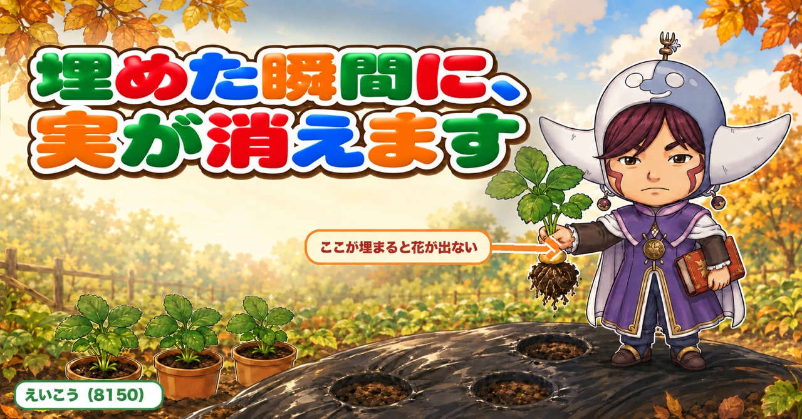
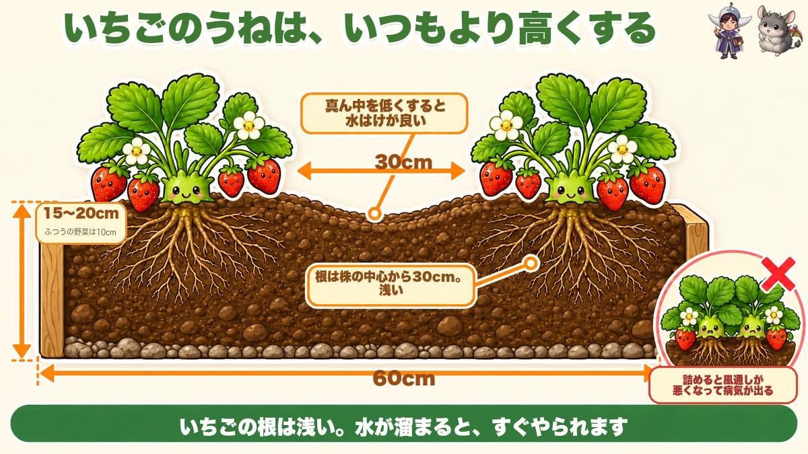
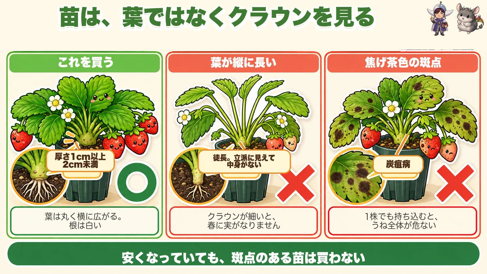
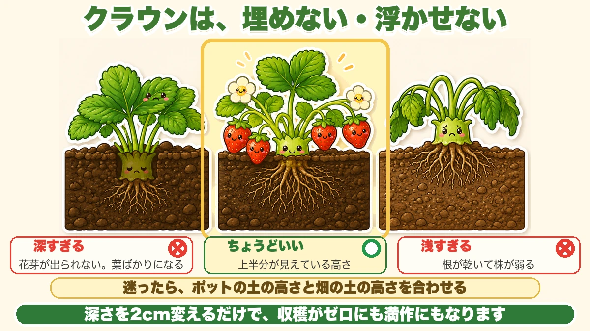
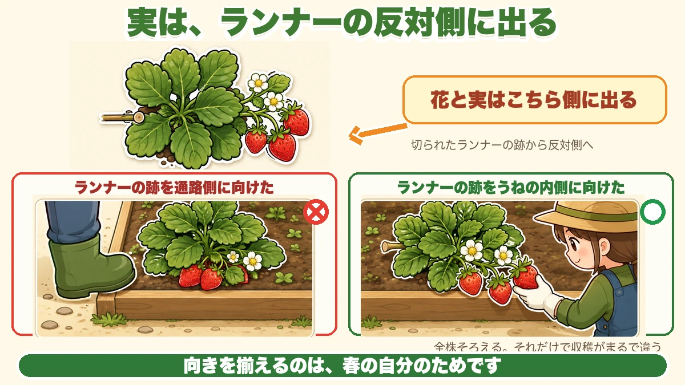

いちごの植え付けと冬越しの段取り｜苗選び・深さ・追肥・受粉の判断帳

どうも、8150（えいこう）です🌱 家庭菜園歴8年、理科の教員免許を持っていて、有機・無農薬で野菜を育てています。
📖 この記事の目次
この記事で分かること
- 秋の苗は、葉の勢いより株元の太さと傷みの有無で選びます。
- 植え付けでは、クラウンという株の中心を土で覆わず、根鉢の高さを合わせます。
- 冬の低い葉や赤い葉は、すぐに失敗と決めず、中心の芽・土の湿り・根の浮きを確かめます。
- マルチと追肥は複数の方法があります。時期だけを抜き出さず、寒風・元肥・春の生育と組み合わせて選びます。
- 春は『実を守る網』と『受粉する虫の入口』を両立させ、必要なら人工受粉を行います。
- 形の悪い実や急なしおれには、花・虫・根を順番に調べることで、次にする作業が見えてきます。
いちごは、赤い実ができる春より前の段取りが大切です。秋に根づかせ、冬の株を傷めずに待つ。この流れを押さえると、「いま何をしたらええんやろ」が整理できます🍓
このページでは、秋に苗を植えて翌春の収穫を目指す育て方を中心に扱います。何度も実をつける品種や、暖房する施設の管理まで同じ暦で進めるものではありません。手元の苗の表示を確認してから読んでくださいね。
最初から読むなら『早見』で日程をつかみ、そのあと手順へ。すでに植えた株が心配なら『失敗の見分け方』からどうぞ。全部を一度に覚える必要はありません。私がこのページで伝えたいのは、何かを足す前に、株の中心と根の状態を見ることです。
早見：いちごの育て方（ひと目で分かる数字）
植える前に確認する数字
- 植え時：10月中旬〜下旬を中心に、10月中に植え終える説明と、11月初めまでを含める説明があります。地域と品種の表示を優先し、全国一律の締め切りにはしません。
- 土づくりの時期：植える2〜3週間前を目安に済ませます。肥料を混ぜた日に、そのまま苗を置く計画は避けます。
- 苗の葉：傷みや虫食いのない葉が3〜5枚ある苗が目安。ただし、枚数だけで買わず中心も見ます。
- クラウンの太さ：1cm以上2cm未満という選び方があります。これは苗選びの目安で、植える深さの数字ではありません。
- 株と株の間：30cmを確保する説明が多くあります。葉が広がったあとの風通しと、実を探す手の入りやすさを考えます。
- うねの幅：60cmという例があるほか、一列植えは50cm、二列植えは70cmという説明もあります。列数をそろえて比較してください。
- うねの高さ：15〜20cmが目安。通路から高くしても、水の出口がなければ排水の問題は残ります。
- 植える高さ：根鉢の表面をうねの表面とそろえる方法と、わずかに高くする方法があります。どちらもクラウンを土で覆わないことが共通です。
- 土の酸度：pH6.0〜6.5という栽培例があります。低い数字ほど酸性寄り。調整する前に、いまの土の値を確認します。
- 植える前の吸水：10分、20分、30分〜1時間と説明に幅があります。時計だけで続けず、泡の減り方と根鉢の湿りを見て取り出します。
- マルチの時期：秋の植え付け時と、冬を越す2月下旬の二つが主な考え方です。寒風対策を急ぐか、春の加温を待つかで段取りが変わります。
- 追肥の時期と回数：12月後半〜1月に1回、2月に1回、2月下旬と3月下旬に2回、追加なし、という説明があります。全部の時期に足す意味ではありません。
- 冬の低温の目安：5℃以下で250〜400時間という説明と、500〜800時間という説明があります。品種差を含む数字で、家庭菜園の全品種に共通する必要時間とはしません。
- 春のネットの隙間：約5cm裾を上げ、受粉する虫の通り道を作る例があります。鳥や小動物を必ず防ぐ寸法ではなく、被害の有無を見て調整します。
- 人工受粉の時期：開花から3日ほど経った花に作業する説明があります。気温や花の状態によって変わるため、日数だけで受粉の成否を決めません。
- 収穫まで：秋植えから翌春の開花・収穫へ進む計画です。材料には、植え付け後何日で収穫できるという共通の日数はありません。品種の収穫期と、実の色づきを目安にします。
- 連作の間隔：何年あけるかを決められる共通の数字は、材料にありません。同じ場所を使うかは、前の株の病気と根の傷み、土の状態を確認して判断します。
まず『日程』『配置』『肥料』を分ける
数字が多いと、全部そろえないと始められない感じがしますよね。でも大丈夫。最初は、植える日を決めるところからです。例えば10月中旬を予定するなら、その2〜3週間前に土の準備をする。ここが先につながります。
次は配置です。うね幅60cmと株間30cmは、別の長さを表しています。幅はうねの横方向、株間は隣の株までの距離。うね幅だけ見て苗を買うと、思ったよりぎゅうぎゅうになることがあります。
最後に肥料を決めます。追肥の説明が複数あるからといって、12月にも1月にも2月にも3月にも足すと、元の方法とは別物です。回数を足し算しないで、最初に入れたものと一組にしてください。
- 苗の品種と収穫期を記録した
- 植える日から土づくりの日を逆算した
- 一列か二列かを決め、通路も残した
- 元肥の種類・量・入れた日をメモした
- 冬の見回りで、根の浮きと中心の芽を見ることにした
春にうまく育たないとき、このメモが原因探しに役立ちます。立派な栽培日誌にしなくてOK。苗のラベルの写真と日付だけでも、記憶だけで悩むよりずっと分かりやすくなります。
作業の手順（時期の順）
1．植える場所と秋の日程を決める
- 苗の表示を見て、秋植えで翌春に収穫する品種かを確認します。
- 冬の日当たり、強い風が当たる向き、雨のあとに水が残る場所を調べます。
- 10月中旬〜下旬を中心に植える日を考え、地域の適期と照らし合わせます。
- 土の準備を2〜3週間前に置き、準備前に苗だけ買いそろえるのを避けます。
- 通路から実を取れる配置にして、春にネットを開けたり株元を見たりできる余裕を残します。
秋に植えるのは、冬前に根を張る時間を確保するためです。葉の伸びが鈍くなると「もう何もしていないのかな」と見えますが、地上の見た目だけでは根の準備を判断できません。春に急に花と実の仕事を始める前に、土の中に土台を作っておくわけです。
春に売られている苗も、育ち方や育苗の段階はさまざまです。『春苗なら収穫できない』と一括りにはしません。ただ、秋植え用の計画を春へそのままずらして、同じ量を期待するのは難しくなります。春から始めるなら、収穫期の表示と苗の状態を見て計画を立て直しましょう。
寒さが必要と聞いても、日陰を選ぶ必要はありません。冬に冷えることと、日が当たらず土が湿ったままになることは違います。日当たりを確保しながら寒風や根の浮きを防ぐ。ここをセットで考えてください。
2．土を整え、うねと水の出口を作る
- 前作で使った肥料と、病気になった株があったかを振り返ります。
- 必要なら土の酸度を測り、調整がいるかを決めます。目標の例はpH6.0〜6.5です。
- 選んだ元肥の方法を一つ決め、表示と面積に合わせて量を計算します。
- 土になじむ時間を置いてから、15〜20cmを目安に高いうねを作ります。
- 株間30cmを基準に植え位置を決め、通路側へ水が逃げるか確かめます。

いちごの根は、株の中心から30cmほどの範囲に広がるという説明があります。根がいる浅い層に水が居座ると困ります。高いうねはその対策ですが、高さの数字だけ達成して終わりではありません。雨のあと、通路にたまった水がうねまで戻ってくるなら、水の逃げ道を見直します。
中央を少し低くするうねや、中央に溝を設ける方法もあります。これは『へこませればどんな土でも排水がよくなる』という意味ではありません。株を置く列と、水を集める場所を分ける形を想定しています。苗の真下に水がたまり続けるくぼみを作らないようにしてください。
一列植えと二列植えでは、使う幅とマルチの余裕が変わります。手元の資材で覆える幅を先に確かめ、苗の数をあとから決めると楽です。狭い場所へ株を追加するより、葉の裏を見られる余白を残した方が、春の管理がしやすくなります。
3．売り場で苗の中心を見て選ぶ
- ラベルで味の特徴、実の見た目、収穫する時期を比べます。
- 葉が縦へ間延びしていないか、横へまとまっているかを見ます。
- 葉の付け根が集まるクラウンを探し、太く締まっている苗を選びます。
- 葉の傷、虫食い、茶色の点、変色した新葉がないかを確認します。
- 根が見える苗は、白い根があるかを確かめます。売り場で無理に苗を抜いて調べる必要はありません。

大きな葉がたくさん付いていると、なんか得した気がしますよね。いちごでは、そこだけを見ないのがコツです。冬を越したあとに新しい葉を出す中心が、ちゃんと育っているかを優先します。
クラウンは、葉の柄が何本も集まる短い茎の部分です。苗を横から見ると、葉と根の間に太い部分があります。太さ1cm以上2cm未満という基準は、その充実を見ようとするもの。葉の長さや草丈のことではありません。
茶色の斑点がある苗は、病気の疑いがあるので購入を見送ります。ただし、斑点一つで炭疽病と断定するわけではありません。名前を当てるより、健康な苗を持ち帰ることが目的です。値下げ札が付いていても、傷んだ苗を立て直す負担まで安くなるわけではないんですよね。
4．自分で増やした苗は、根づいてから切り離す
- 健康な親株から伸びるランナーをたどり、苗ができた順番を確認します。
- 親に近い最初の子株より、その先の孫株・ひ孫株を候補にする方法で選びます。
- 育苗用の土へ固定するときも、クラウンまで埋め込まないようにします。
- 根づくまでは位置をむやみに変えず、親とつながった状態で育てます。
- 自分の根で支えられる状態を確かめてから、親側のランナーを切り離します。
ランナーは、親株と新しい苗をつなぐ細いつるです。根づく前に切ると、苗が十分な水や養分を得られず育ちにくくなります。先に独立させてから頑張ってもらう、という順番にはしないでください。
苗の順番と病気の有無は、別に確認する項目です。孫株を選んだから病気の心配が消える、とは考えません。親に病気の疑いがあれば、その親から増やす計画を見直します。孫かどうかはランナーをたどって判断し、葉柄の本数だけで系図を決めないようにしましょう。
購入苗なら親株とのつながりが見えないこともあります。その場合に無理に『これは何番目』と決めなくて大丈夫。株元の充実、傷んだ葉の有無、根の状態という苗そのものの確認へ戻ります。
5．根鉢へ吸水させ、植え穴の沈みを先に確認する
- ポットの土が乾いているかを確認し、水を含ませます。
- 水に浸ける方法を使うなら、根鉢から出る泡と湿り方を見ます。
- 吸水できたら取り出し、長く水没させたままにしません。
- 植え穴に水を入れる方法では、水が引いてから底の高さを確認します。
- 底が沈んで深くなっていれば、土を戻して高さを調整してから苗を置きます。
根鉢というのは、根が回ってまとまったポットの土のことです。葉へ水をかけるだけでは、乾いた根鉢の中まで湿らない場合があります。植える前にここを確認すると、植えたあと『土は湿っているのに苗がしおれる』という状態を見分けやすくなります。
吸水時間は説明によってかなり違います。10分で切り上げる方法と、30分以上置く方法を、同じ苗で続けて行う必要はありません。ポットの大きさや乾き具合も違うので、時間は目安。泡が減り、土に水が入ったら取り出すという観察を添えます。
穴に水を入れて高さを先に落ち着かせるのは、苗を置いたあとに沈み込むのを避ける工夫です。水がいつまでも残るなら、吸水の工程だけでなく排水も見直してください。深い穴へ苗を押し込むための水やりではありません。
6．クラウンを出して植え、最後に高さをもう一度見る
- 根鉢を崩しすぎないようにポットから取り出します。
- クラウンの位置と、親につながっていたランナーの跡を探します。
- 根鉢の上面が、うねと同じ高さか少し高い位置になるように苗を置きます。
- 周囲へ土を戻し、根鉢と畑の土の隙間をなくします。中心へ土を盛りません。
- 植え付けの水を与えたあと、苗が沈んでいないか、根がむき出しでないかを確認します。

クラウンの中央には、新しい葉や花につながる芽があります。この場所まで土をかぶせると、芽が出る部分をふさぎ、湿った土との接触も増やしてしまいます。『クラウンは出す、根は土に収める』の二つを一緒に守ります。
浅く植えようと意識しすぎて、根鉢を半分も浮かせるのも困ります。露出した根は乾きやすく、株がぐらつきます。高さを合わせるのは、根鉢の上面が基準です。葉が出ている中心を土の下へ隠さず、根がある側は土と接するように仕上げてください。
植えた直後の見た目だけで安心せず、水が引いたあとも見ます。苗が下がったら、中心へ土をかけ足すのではなく、苗の置かれている高さを直します。ぐっと押して固定したくなるところですが、中心を押しつぶす必要はありません。
7．ランナーの跡を使って収穫する方向をそろえる
- 親株側へつながっていたランナーの跡を確認します。
- その反対側に花や実が出やすいという説明を基準に、実を取る側を決めます。
- 通路から取りたいなら、親側の跡をうねの中央方向へ向ける配置にします。
- 跡が見えない苗は、向きの判断に時間を使いすぎず、深さと株間を優先します。
- 春に実が出た場所を見て、土に触れない受け方を調整します。

向きをそろえると、実がある側を探しやすくなります。ただし、すべての花がきっちり同じ方向へ出るという約束ではありません。新しいランナーと、親から入ってきたランナーを取り違えると、説明も逆に聞こえます。
小さいうねなら、どちらへ実が出ても手が届くことがあります。向きが分からないせいで植え付けを遅らせたり、苗を何度も回して根を傷めたりしなくてOKです。収穫の便利さはあとから補えますが、埋めた中心と傷めた根はその場で困ります。
8．秋の活着を見守り、毎日の水やりを習慣にしない
- 植えた日に根鉢と周囲の土へ水が行き渡ったかを確認します。
- その後は、雨と土の湿りを見て水やりを判断します。
- 苗がしおれたら、すぐ水を追加する前に根鉢の乾きと排水を調べます。
- 中心から新しい葉が動くか、株がぐらついていないかを見ます。
- 肥料を増やす前に、植え付けの高さと根の状態を確認します。
苗を植えると、つい毎日何かしてあげたくなりますよね。いちごの根がずっと湿ったままなら、その親切が負担になります。水が必要かどうかは、作業したい気分より土に聞く方が確かです。
畑の土とプランターでは乾き方が違います。畑で『植えたあと頻繁には水を足さない』という話を、容器にもそのまま当てはめて完全に放置しないでください。容器では根が使える土の量が限られます。表面だけでなく根鉢の湿りを見ながら判断します。
9．冬は葉を全部取らず、根の浮きと風を見回る
- 外側の葉が赤くなり低く広がっても、中心に健全な芽があるかを先に見ます。
- まだ赤みが残る葉を、見た目を整えるためだけに取らないようにします。
- 完全に乾いた古い葉と、傷みや病気の疑いがある葉を区別します。
- 霜柱で株が浮いていれば、根を土へ戻し、中心は埋めない高さに整えます。
- 寒風が強い場所では、防虫ネットを風よけとして使う方法を検討します。
冬に葉が地面近くへ広がる姿を、ロゼットと呼びます。株が低くなったからといって、秋の直立した姿へ戻す必要はありません。冬の姿へ変わっただけなのに、肥料と水で無理に動かそうとしないことが大切です。
葉の片づけは『赤くなった日』を合図にしません。栄養を株へ戻している途中の葉と、完全に乾いて役目を終えた葉は違います。古い葉が風を和らげる面もあります。ただし、病気の疑いがある葉まで防寒用に残すわけではありません。
乾燥時には、株元へ直接水をためず、うねの肩へ与える方法があります。冬は凍結の心配もあるので、株の中心を濡らし続けないようにします。霜柱で根が露出した株では、水を増やすだけで根の位置は直りません。先に根を土へ戻してください。
10．春の芽の動きに合わせ、葉・肥料・被覆を整える
- 新しい葉が伸び始めたら、古い乾いた葉を整理して中心を見やすくします。
- 元肥の記録と、株の葉色・大きさを見て、追肥がいるか判断します。
- 選んだ施肥方法の時期と量を守り、複数の方法を重ねません。
- 実を土から離すため、マルチや敷き物の位置を整えます。
- 防寒用の覆いを、受粉する虫が入れる状態へ切り替えます。
春は、冬の管理を続けるだけでは足りません。寒風を避ける覆いが、今度は花へ来る虫を止めることがあります。用途が変わる時期なんですよね。『冬に便利だったから、そのまま』ではなく、花が開いたら入口を見ます。
ビニールを使っている場合は、晴れた日に中が暑くなりすぎないかも確認します。保温を強くすれば受粉までよくなる、とは限りません。防寒、換気、鳥よけは別の目的なので、覆い一枚に全部の仕事を任せないようにしましょう。
11．花へ虫が来ないときは人工受粉をする
- 花の中心が傷んでいないか、虫が潜んでいないかを見ます。
- 晴れた日に虫が来るかを観察し、閉じたネットや高い階のベランダでは人工受粉を考えます。
- 開花後3日ほどを目安に、花粉が出ている花を確認します。
- 柔らかい道具で、花の中央を傷めず全体へ軽く触れて花粉を移します。
- 後日、中央が膨らむか、黒く傷んでいないかを見ます。
花の真ん中の一部だけに触れると、花粉が届く場所に偏りができます。強くこするより、軽くまんべんなく。小さな花なので、力を入れてやった感を出さなくて大丈夫です。
受粉しやすい日数も、虫が動く温度も目安です。咲いた日から機械的に3日待ち、4日目しか触ってはいけないという意味ではありません。寒さや雨が続いたときは、花の状態を見て次に観察できる日に確かめます。
12．実を土へ触れさせず、傷んだものは残さない
- 花から育つ実がどちらへ垂れているかを確認します。
- 土に接する実は、マルチや敷き物の上へ受ける形に整えます。
- 色づきと品種の表示を見て、収穫できる実を選びます。
- かじられた実、腐り始めた実、カビが見える実を健全な実と分けて取り除きます。
- 鳥の被害や這った跡があれば、次の実が熟す前に対策を見直します。
大きくなるのを待ちすぎると、収穫できたはずの実が傷むことがあります。秋から待った分、あと少し欲張りたくなるんですけど、成熟した実は残してもずっとよくなるわけではありません。
ここまで来たら、日付だけでなく、どの側に実が出たか、どこが土へ触れたかを残しておくと、次の配置に使えます。向きの説明を暗記するより、自分の苗がどう育ったかを見ておく方が、次の作業へつながります☺️
失敗の見分け方（症状→原因→やること）
植えたあと、中心から葉が動かない
- 症状：周囲の葉は残っているのに、中心の新しい葉が見えません。
- 考えられる原因：クラウンの埋没、植え付け後の沈み、根の乾燥や傷み、季節による生育の鈍化です。
- やること：中心にかぶさった土、根鉢の高さ、土の湿りを確かめます。冬の時期なら、動かないことだけで枯死と決めません。
肥料を足す前に、土の表面を横から見てください。中心まで土が乗っているなら、葉へ栄養を送る以前の問題です。根が乾いているのか、水が停滞しているのかでも対処は逆になります。
確認のために中心を何度もつまんだり、細い道具を差し込んだりしないようにしましょう。見える葉と高さを調べ、必要なところだけ直します。芽そのものを探そうとして傷めると、原因探しが別の原因になってしまいます。
葉が低く広がり、赤くなってきた
- 症状：冬に草丈が下がり、外側の葉に赤みが出ています。
- 考えられる原因：冬の休眠に伴う姿の変化と古い葉の老化です。中心まで傷んでいる場合は、寒害や根の不調も考えます。
- やること：中心の健全な芽、根の浮き、病斑の有無を見ます。健康な中心が残るなら、外葉の色だけで追肥を決めません。
赤い葉と、乾いて茶色になった葉は区別します。まだ柔らかい赤い葉を全部取ると、残して使える部分まで減らしてしまいます。反対に、湿って腐り始めた葉や斑点の広がる葉は、単なる冬の葉として放置しません。
葉を片づけた日は、株元の風当たりも変わります。見た目だけすっきりさせて終えるのではなく、根が露出していないか、土が乾きすぎないかも続けて見てください。
株が持ち上がり、根が見えている
- 症状：苗がぐらつき、株の下に空間や露出した根があります。
- 考えられる原因：霜柱による持ち上がり、植える高さの上げすぎ、土が沈んだあとの隙間です。
- やること：根を土へ収めて接触を戻し、クラウンを覆わない高さに整えます。繰り返し浮く場所は、排水と風当たりも見直します。
この症状で中心へ土を山盛りにすると、今度は深植えになります。足したいのは根の周りの土です。『根を守る土』と『中心へ乗せる土』を分けて考えると、作業が迷いにくくなります。
株が浮いていると、乾燥した葉だけを見て水不足と思いやすいです。水をかけても根と土の隙間は残るので、まず位置を戻します。根が土へ触れて水を受け取れる状態にするのが先です。
葉は大きく濃い緑なのに、花が少ない
- 症状：葉ばかり目立ち、春になっても花や実が期待ほど増えません。
- 考えられる原因：肥料過多、苗や品種の条件、植え付けの遅れ、冬の傷みなどです。
- やること：元肥と追肥の記録を確認し、追加を止めてほかの原因も調べます。葉の大きさだけで一つの原因に決めません。
実より葉やつるの生育が優勢になる状態を、つるぼけと呼びます。見た目は立派なので、元気な株へもう一押ししたくなるんですよね。ここで足すと逆に実が遠のくことがあります。
濃い葉色を見たら『もっと濃くする』のではなく、これまで何を入れたかを確認します。元肥の上に違う栽培法の追肥を重ねていないか。鉢の土に肥料が入っていたのに、別の元肥を加えていないか。量の記録が原因探しにつながります。
一株だけ急にしおれ、周囲と様子が違う
- 症状：同じ日に植えた株のうち、一株だけ葉がしおれます。
- 考えられる原因：根を食べるコガネムシの幼虫、根腐れ、病気、根鉢だけの乾燥です。
- やること：土の湿りと中心を調べ、回復せず根の確認が必要なら、根と土の中の幼虫を見ます。
根が減って細いものばかりになっていると、根を食べる虫が疑われます。ただし、根の見た目だけで虫の名前を決めず、幼虫がいるかまで確かめます。すべての株へ水を増やすより、一株だけ違う理由を探してください。
しおれと葉の斑点が重なる場合は、病気も候補です。傷んだ株を別の場所へ移すだけで健康になるとは限りません。病気が疑わしい株を増殖用に使わないことと、周囲にも似た症状がないかを見ることを優先します。
実の片側だけ小さく、形がゆがんでいる
- 症状：一部がへこみ、左右の膨らみ方が違います。
- 考えられる原因：受粉の偏り、花の中心の寒さによる傷み、花に入るアザミウマなどです。
- やること：次の花で虫の訪問と中心の状態を観察し、必要なら人工受粉を行います。防虫ネットをかけている場合も花の中を見ます。
形がゆがんだあと、その実に花粉を足して元へ戻すことはできません。対策する対象は、これから開く花です。実の形は結果、次の花の観察は予防。ここを分けると、やる作業がはっきりします。
ネットには入れない虫と、小さくて通り抜ける虫がいます。『網をしたから虫ではない』と候補から外さないでください。花の中を見て、細い虫が動いていないか確認します。
花の中央が黒くなり、実が膨らまない
- 症状：花びらが残っていても、中央が暗く傷んでいます。
- 考えられる原因：低温による花の傷みや、受粉・その後の発達がうまく進まなかったことです。
- やること：黒ずみを受粉失敗だけの証拠にせず、冷え込んだ日とほかの花の状態を確認します。次の健全な花で受粉環境を整えます。
中央が黄緑色を保ち、後日膨らむのは、生育が進んでいる手掛かりです。ただし、色を見た直後に成功率まで計算できるわけではありません。花の中心が健全かを見ることと、実になったかを後日見ることを組み合わせます。
実にかじり跡があり、表面に這った筋もある
- 症状：実の表面が削られ、近くのマルチに光る筋が見えます。
- 考えられる原因：ナメクジによる食害が候補です。大きな欠損では、鳥など別の相手も考えます。
- やること：株元の草、湿った古い葉、敷き物の下を確認します。傷んだ実を取り除き、次の実が触れる場所を整えます。
ナメクジは昼の見回りだけでは見つけにくい相手です。姿が見えなくても這った跡が観察の手掛かりになります。容器なら底の通気も確認し、すのこやブロックで下に隙間を作る方法があります。
食害や腐敗がある実を、健全な実のそばへ置いておかないようにします。鳥に狙われているなら網の位置を、這う相手なら隠れ場所を見直します。同じ『食べられた』でも、相手で対策の場所が違います。
実にカビが出て、近くの実まで傷む
- 症状：柔らかく腐った実や、灰色のカビが見える実があります。
- 考えられる原因：灰色かび病などの病気、土との接触、食害の傷、湿気がこもる状態です。
- やること：傷んだ実を早めに取り除き、実を土から離し、株同士や覆いの中の風通しを確認します。
株間を詰めすぎた場所は、成熟期に葉が重なって実が見えにくくなります。気づくのが遅れるだけでなく、湿った状態も続きやすくなります。秋の株間30cmは、春の実を見つけて手入れするための余白でもあるわけです。
傷んだ実だけ取っても、次の実が同じ湿った土へ乗れば条件が残ります。実を受ける面、葉の重なり、水のたまり方を一緒に直してください。見える症状を片づける作業と、同じ症状が出る場所を変える作業の両方が必要です。
説明が分かれていること
マルチは秋から張るか、2月下旬まで待つか
- Aという説明：植え付け時から張り、冷たい風や地温の低下による苗の傷みを抑えます。冬の低温には触れながら、根の周りを守る考え方です。
- Bという説明：秋に温度を上げすぎるのを避け、春の生育を始める2月下旬に張ります。冬に余分な花が付くのを抑えたいという考え方です。
- どう考えればよいか：寒風の強さ、土の冷え方、苗の大きさ、あとから張る作業のしやすさを比べて選びます。日付だけで正誤を決めません。
同じ説明の中でも、収穫を考えると春に張りたいけれど、作業を簡単にするため秋から張る、という選択があります。生育上の希望と作業上の都合が分かれているんですよね。先に張るなら、秋冬の花と高温になりすぎる日を観察する段取りも持っておきます。
あとから張るなら、育った葉や中心を覆い込まないようにします。『2月になったから張る』だけでなく、株を傷めず穴から出せるか、実を受ける場所ができるかを確認してください。
追肥の時期は冬、春、それとも追加なしなのか
- Aという説明：12月後半〜1月に一度入れ、効果が出るまでの時間を見込む方法です。2月に一度だけ行う説明もあります。
- Bという説明：2月下旬と3月下旬の二度に分ける方法、元肥が足りていれば追肥しない方法があります。
- どう考えればよいか：元肥、使う肥料の効き方、土の蓄積、春の株の状態を一組で確認します。時期の平均を取ったり、全案を順番に実行したりしません。
有機質の肥料で冬に仕込む段取りと、春に生育を見て補う段取りは、必要な時期に届かせる考え方が違います。違いを無視して回数だけ増やすと、葉が茂りすぎる方へ進むことがあります。
元肥を入れた記録がない場合、追加が必要かも判断しにくくなります。そんなときは株の色だけで量を決めず、これまでの作業を確認します。元肥が十分という前提での『追加なし』と、初めから肥料分の少ない土を放置することも同じではありません。
穴へ肥料を入れる方法では、効きを急ぐために穴へ水を注ぐのを避ける説明があります。休んでいる株の根の周りに水をためないためです。追肥をしたから水も追加、という自動の組み合わせにはしません。
元肥へ鶏ふんを使うか、控えるか
- Aという説明：牛ふん堆肥と少量の鶏ふんを組み合わせる方法があります。面積当たりの量を決め、植える前になじませる計画です。
- Bという説明：鶏ふんは肥料分が強く、入れすぎによる根の障害を避けるため使わず、牛ふん堆肥を中心にする方法があります。
- どう考えればよいか：製品の成分と土の履歴を確認し、配合を丸ごと一つの方法として扱います。違う説明の資材を追加して豪華にしないことです。
ここで重要なのは、堆肥ならすべて同じ働きではない、という点です。同じ『ふん』という名前でも、成分や使い方は違います。牛ふんの量を、そのまま鶏ふんへ置き換えるような使い方はしません。
材料には、重さで表す施肥例と、体積で表す施肥例が混在します。gとccを同じ量として計算できません。銘柄が違えば同じ体積でも成分量は変わります。このページでは、異なる配合を一つに合成した万能の元肥レシピは置かず、表示と選んだ方法へ戻る形にしています。
クラウンの植え位置は、地面と同じか少し高いか
- Aという説明：ポットの土の上面と、うねの表面をそろえます。
- Bという説明：水やり後の沈みも考え、根鉢の上面をわずかに高く置きます。
- どう考えればよいか：クラウンが埋まらず、根が露出しない仕上がりを共通の目標にします。水が引いたあとに高さを再確認します。
『浅植え』という言葉だけ覚えると、浮かせるほどよいと受け取りやすいです。逆に『しっかり固定』だけ覚えると、中心まで土を押し付けがち。高さと土の接触を別に見れば、両方の困りごとを避けやすくなります。
ランナーと実の向きが、説明によって逆に聞こえる
- Aという説明：親から入ってきたランナーの反対側に花や実が出やすいとします。
- Bという説明：伸びていくランナー側に花が出るという説明や、家庭菜園なら方向を重視しなくてよいという説明があります。
- どう考えればよいか：入ってきた側と、出ていく側を同じものとして比べないようにします。基準が不明な苗では、深さと根の健康を優先します。
逆の説明が、別のランナーを指している可能性はあります。ただし、言葉だけで『全部同じ意味だった』と結論づけることもできません。苗のどの跡を見ているかをそろえて判断する必要があります。
収穫を便利にする方向の調整は、育てるための必須条件とは分けて考えます。小さなうねでどちら側からも取れるなら、神経質にならなくて大丈夫です。
冬の低温は250〜400時間か、500〜800時間か
- Aという説明：5℃以下で500〜800時間という目安があります。
- Bという説明：250〜400時間という短い目安もあります。
- どう考えればよいか：品種や栽培条件をそろえず、数字だけを比較しません。冬の低温を経て春の生育へ移る性質と、秋の花芽形成を区別します。
『低温が関係する』という共通点があっても、花芽を作る段階と、休眠から春の生長へ向かう段階は同じではありません。必要時間を満たすために日陰へ移す、中心へ冷たい水をかける、といった管理にはつなげません。
家庭菜園では、まず品種の表示に合う地域と環境で、日当たりのよい場所へ健康な苗を植えることが先です。低温の数を数えるために株を傷めたら、本末転倒になってしまいます。
葉を残す枚数と、古い葉を取る時期
- Aという説明：11月末に葉を6枚ほど残す管理や、冬の赤い葉・古い葉を残す管理があります。
- Bという説明：栽培管理の例では3.5枚程度に絞るものがあり、乾いた古葉を1月ごろ取る説明と、2月中旬以降や新芽が伸びてから取る説明もあります。
- どう考えればよいか：施設や生育条件の違う葉数を、家庭菜園へそのまま持ち込みません。健康な葉、栄養を戻している葉、乾いた葉、病気の葉を分けて判断します。
葉が多すぎて蒸れる問題と、取りすぎて株の力を落とす問題は両方あります。一定の枚数にそろえることを目的にせず、冬に新しい葉が増えにくいことも考えて残します。葉数の小数点は管理の目安で、葉を半分切る指示ではありません。
アザミウマの大きさは1mmか、5mmか
- Aという説明：1mmほどの小さい虫として説明されています。
- Bという説明：5mmほどとする箇所もあります。
- どう考えればよいか：材料だけでは、大きさの違いを確定できません。5mmの虫だけを探すのではなく、花の中にいる細い小虫を確認し、実物で判断します。
サイズの食い違いを平均して『3mm』と書くと、材料にない数字を作ることになります。分からない部分は残しつつ、見回りでは花の内側を見て、網を通る小虫も候補にする。作業に必要な情報はそこです。
よくある質問
学ぶ：いちごの花と赤い部分のしくみ🔬
まとめ
いちご苗
クラウンの上半分が見えている高さに植えてください。埋めると花が出ません。
![[商品価格に関しましては、リンクが作成された時点と現時点で情報が変更されている場合がございます。]](https://hbb.afl.rakuten.co.jp/hgb/56d219d2.53a040c0.56d219d3.af4d1b3a/?me_id=1335885&item_id=10000039&pc=https%3A%2F%2Fthumbnail.image.rakuten.co.jp%2F%400_mall%2F15no87%2Fcabinet%2F08573597%2F08577457%2F1bn698.jpg%3F_ex%3D240x240&s=240x240&t=picttext "[商品価格に関しましては、リンクが作成された時点と現時点で情報が変更されている場合がございます。]")

黒マルチ
実が土に触れると傷みます。マルチの上に実を乗せる形にします。

敷きわら
マルチを張らないなら、こちらを厚めに。同じ役目をします。
![[商品価格に関しましては、リンクが作成された時点と現時点で情報が変更されている場合がございます。]](https://hbb.afl.rakuten.co.jp/hgb/56bc2fb2.ff40a6e6.56bc2fb3.618f6a70/?me_id=1257026&item_id=10000211&pc=https%3A%2F%2Fthumbnail.image.rakuten.co.jp%2F%400_mall%2Fsharuka%2Fcabinet%2F09042254%2Fimgrc0081094692.jpg%3F_ex%3D240x240&s=240x240&t=picttext "[商品価格に関しましては、リンクが作成された時点と現時点で情報が変更されている場合がございます。]")
液肥
追肥は11月まで。年明けに効かせると葉ばかりになります。
![[商品価格に関しましては、リンクが作成された時点と現時点で情報が変更されている場合がございます。]](https://hbb.afl.rakuten.co.jp/hgb/56bc2da1.2bf36c6e.56bc2da2.7b66fad7/?me_id=1347284&item_id=10000008&pc=https%3A%2F%2Fthumbnail.image.rakuten.co.jp%2F%400_mall%2Fmandahakko%2Fcabinet%2Fsyokubutsumanda%2F260306_smn_amn5004.jpg%3F_ex%3D240x240&s=240x240&t=picttext "[商品価格に関しましては、リンクが作成された時点と現時点で情報が変更されている場合がございます。]")